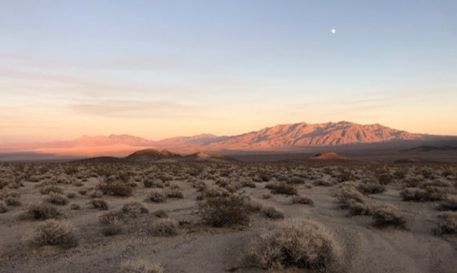
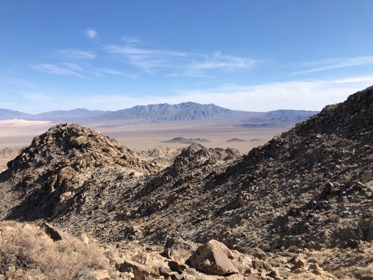
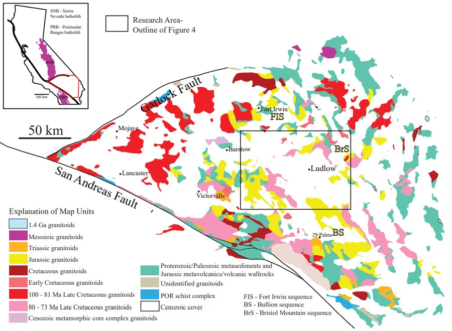
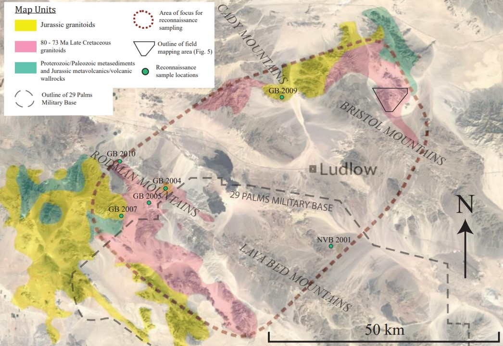
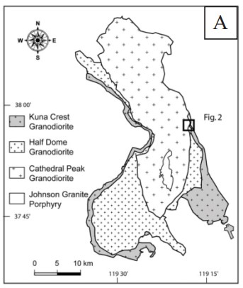
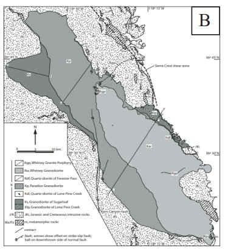
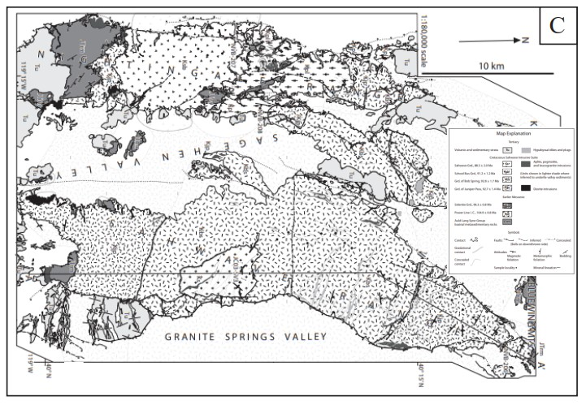

Overview
The Mojave Desert is home to rocks that represent every phase of western United
States Cordilleran evolution, yet it is significantly less researched than other regions on
the west coast, partially because of widespread Cenozoic cover. Plutons in the
Mojave Desert are particularly important features of Cordilleran geology because they
are located where Laramide disruption first affected the western U.S., and where it also
did the most damage to the underlying lithosphere

This study focuses on an area that is…
- Lacking in geologic mapping
- Contains significant exposures of plutonic rocks that have unknown origins

Abstract
The Mojave Desert is an important section of California for geological research,
as it was the first region of the western United States to experience the effects of
Laramide disruption. This study looks at plutonic rocks in the vicinity of Ludlow, CA in
the Mojave Desert, and focuses on one section of the Bristol Mountains where a large
area of plutonic rock is exposed. Geologic mapping in the Bristol Mountains,
reconnaissance sampling, U-Pb geochronology, and whole-rock compositional analysis
were used to gather information into the magmatic and tectonic origins of the Bristol
Mountains field site, and the associated plutonic rocks in the surrounding area. The
Bristol Mountains site predominantly consists of five felsic units that range from
granodiorite to granite. Also found at the site are large blobs of gabbro to the east, and
mylonites that are products of a metamorphic core complex to the west. Three new U-Pb
radiometric ages yield an age of 77.2 ± 1.3 Ma at the rim of the pluton, and ages of 74.9 ±
1.2 Ma and 74.6 ± 1.3 Ma in units closer to the core. From the concentric zoning and
compositional variations of the five felsic Bristol Mountains units, it was determined that
they are part of a large cogenetic intrusive suite referred to here as the Ludlow batholith,
and that these units probably young inwards from the southeast to the northwest.
Exposures of the Ludlow batholith were also found about 50 km to the southwest in the
Rodman Mountains, and it is likely that about 2,000 km2 of the central Mojave is
underlain by a contiguous Ludlow batholith. From analysis of REEs and other trace
elements, it was also revealed that Ludlow batholith is not a result of normal arc
magmatism, and instead likely formed from slab-tear magmatism at the boundary of the
Shatsky conjugate and Farallon Plate.
Location
Rocks of the Mojave Desert

Modified from Van Buer, in prep
The map above outlines the location and ages of different rock types in the Mojave Desert located in Central/Southern Califonria. The general research area is outlined by the block box on the map above, and shown in greater detail onthe map below.
Research Area

Colored blobs indicating pluton ages are taken from Van
Buer, in prep
Here is a more detailed view of the research area. The black line outlines the field
mapping location that is depicted in the methods section. The dashed red line surrounds the
area where possible samples related to the rocks in the field mapping area were
initially searched for. Colored blobs indicating pluton ages
Geologic Background
Tectonic Setting

Modified from Liu et al., 2010
90-85 Million Years Ago (Ma)...
a large oceanic plateau, known as the Shatshy Conjugate, reaches the western margin of North America. Oceanic plateau are thicker than normal sections of
oceanic crust, that are also more buoyant. Their relatively buoyant nature forces subduction at the margin to occur at a lower angle than it normally would.
80 Ma...
normal arc magmatism ceases in the Mojave due to shallow-slab subduction, which results in the Laramide orogeny.
70 Ma...
subduction angle of the Farallon plate steepens, easing compressional forces at the margin, and triggering basin-and-range extension
Granitic Intrusive Suites
Cogenetic intrusive suite = plutonic rocks that form from a series of intrusions from a single magma source at different stages of the magma differentiation process
Common characteristics of the intrusive suites…
- younger units nested with older ones
- mafic outer units with equigranular textures
- felsic inner units that contain K-feldspar mega-crysts
- contact-aligned mafic enclaves in outer units
Tuolumne Intrusive Suite

From Coleman et al., 2004
Whitney Intrusive Suite

From Hirt, 2007
Sahwave Intrusive Suite

From Van Buer and Miller, 2010